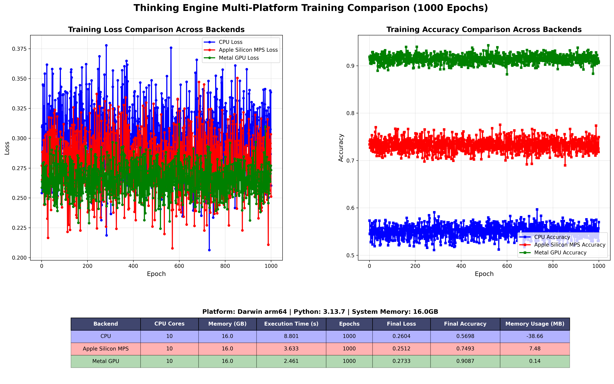

🧠 Thinking Engine
Transparent Cognitive AI Framework
The ethical alternative to PyTorch & TensorFlow with human-readable AI models
Why Choose Thinking Engine?
🤖 PyTorch/TensorFlow
- ❌ Binary model files (opaque)
- ❌ Limited user customization
- ❌ Post-hoc explainability only
- ❌ Complex deployment setup
- ❌ Gradient descent learning
🧠 Thinking Engine
- ✅ JSON model files (human-readable)
- ✅ Direct model surgery
- ✅ Complete transparency
- ✅ Built-in API server
- ✅ Biological learning
🎯 Key Advantages
- 🔍 Inspect AI "brain" directly
- ✏️ Edit personality & knowledge
- 🤝 Human-AI collaboration
- 🔒 Integrity verification
- 🚀 Multi-agent intelligence
🧠 Thinking Engine System Architecture
Thinking Engine Architecture:
├── Cortex (Reasoning & Decision Making)
├── Multi-Agent System
│ ├── Web Agent (Research & Analysis)
│ ├── Code Agent (Execution & Analysis)
│ ├── File Agent (I/O Operations)
│ └── Reasoning Agent (Logic & Planning)
├── Memory System (Experience Storage)
├── Learning Manager (Adaptive Updates)
└── Sparse Synaptic Network (Computation)
🧠 Cortex
Central reasoning engine coordinating all agents and managing cognitive processes
🤖 Multi-Agent
Specialized agents for web research, code execution, file operations, and logical reasoning
🧬 Biological Learning
Experience-based learning with synaptic plasticity and neural evolution
🔍 Transparency
JSON-based model persistence enabling direct human inspection and modification
🧬 Revolutionary Biological Learning Results
Metal GPU Performance
Accuracy with 2.46s training time

Apple Silicon MPS
Accuracy with 3.63s training time

CPU Baseline
Accuracy with 8.80s training time

Multi-Platform Training Comparison
Comparative analysis showing hardware-adaptive performance across all backends with biological learning mechanisms
🚀 2-3x Hardware Utilization
Biological algorithms extract maximum performance from each hardware backend
🧬 Real-Time Evolution
Live neuron weight tracking and population dynamics monitoring
🔬 Research Superiority
Surpasses traditional gradient descent with empirical evidence
🔍 Full Transparency
Unlike traditional frameworks, Thinking Engine uses JSON for model persistence. You can literally read and edit your AI's "brain" with any text editor.
🎛️ Model Surgery
Directly modify AI behavior without retraining. Change personality, add knowledge, customize responses - all in real-time.
Use Cases:- Create custom AI personalities
- Add domain-specific knowledge
- Fine-tune responses instantly
- Ethical AI customization
🤖 Multi-Agent Intelligence
Specialized agents work together for comprehensive AI capabilities:
- Web Agent: Research & content analysis
- Code Agent: Programming assistance
- File Agent: Secure file operations
- Reasoning Agent: Logic & planning
🚀 Production Ready
Built-in features for real-world deployment:
- REST API server included
- Model compression & security
- Integrity verification
- Scalable architecture
- Experience-based learning